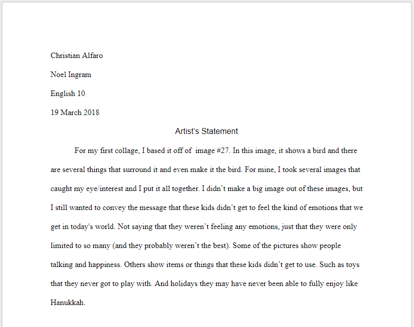
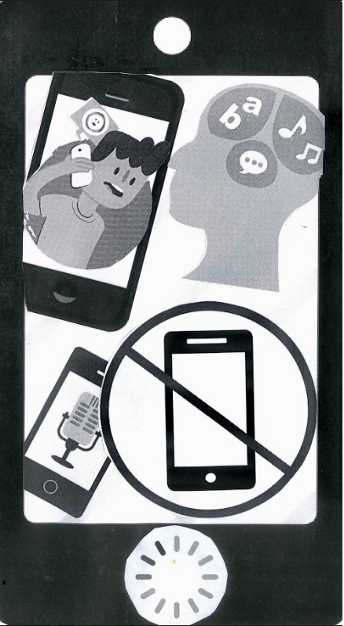
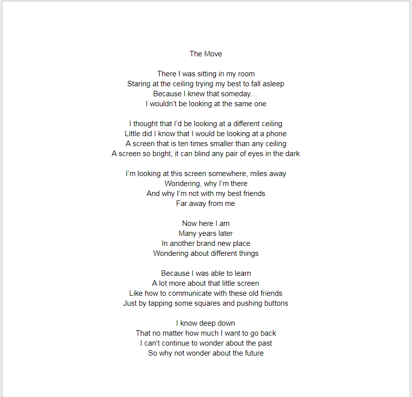
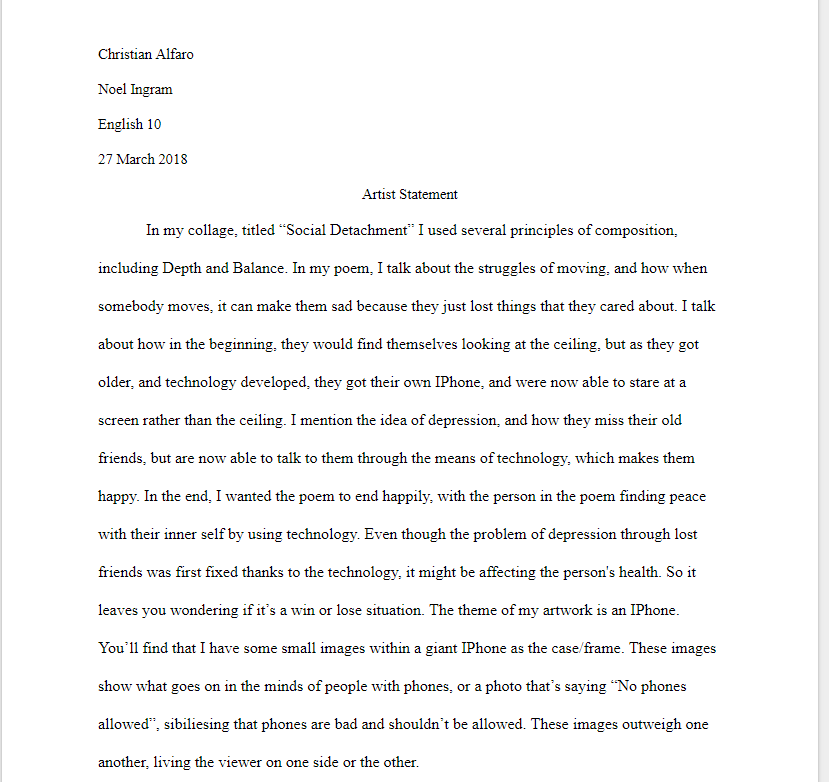

This is my second collage. For this collage, the inspiriation came from articles that we read on curtain topics. The articles that I read were ones on "Social Media
and Politics (the public sphere)". After reading two articles on this topic, I made this collage based off those articles.


